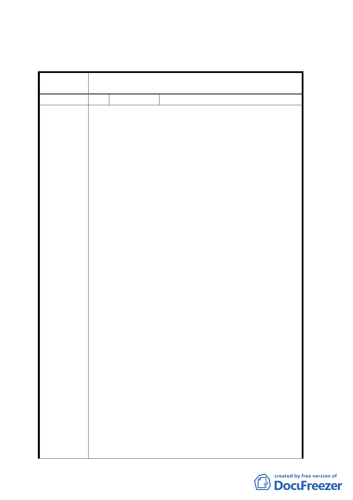

通盤檢討辦理。
四、 「公民或團體所提意見」審決如後附綜理表。
臺北市都市計畫委員會公民或團體所提意見綜理表
案
名
變更臺北市內湖區東湖段一小段 19 地號部分公園用地為
道路用地細部計畫案
編 號 1 陳情人 祥和法律事務所 律師余鐘柳
1.查本律師於民國 73 年 7 月 1 日台灣士林地方法院成立時
，追隨胡致中院長自台灣基隆地方法院奉調至該院服務
，為上班方便起見，便在東湖里康樂街 72 巷 17 弄 40
號 3 樓購屋居住迄今。
2.按東湖地區市地重劃時，社區內道路大多規劃為 6 米或 8
米，由於居住民路邊停車積習難改，導致社區道路紛紛
改為單行道，久為居民所詬病，因而在地方士紳努力，
成立「東湖社后交通改進會」，在馬前市長鼎力支持下
，先後完成東湖山區聯外道路、高速公路南側便道之闢
建，高速公路北側道路之拓寬（含汐湖二橋之興建）以
及興建三座停車場、康寧路自東湖路口至交流道止之路
段，改為南北各三縣道等改進措施後，已使東湖地區之
交通獲得大幅之改善，但社區內 6 至 8 米道路之拓寬，
因建築物林立下，貴府始終束手無策，而延宕至今未解
。
3.現本律師在門口公告欄上發現，貴會擬將內湖區東湖段
一小段 19 地號部分公園用地變更為道路用地，乍看之
陳 情 理 由 下，其立意良善，但經深入思考，實不難令人有圖利「
聯邦合家歡社區吉祥區更新會」之嫌，特陳述圖利之理
由如下：
（1）全東湖地區類似係爭 6 米道路共有數十條，均未見都
市計畫之變更，貴會為何獨厚此短短不到百米長之道
路，而辦理專案變更？
（2）東湖四號公園四週均為 6 米道路，東、西、南三面同
樣寬度之道路未加以變更，為何獨厚面臨吉祥區都市
更新會建築基地之系爭道路？
（3）按都市更新法令有獎勵私設公共設施之規定，而東湖
地區道路狹窄、舊建築林立，貴會自應利用都市更新
之機會，要求都市更新單元自動退縮建築線而保留空
間，如此一來，即可達到逐步拓寬道路之目的，貴會
為何未從此角度思考，卻要減少公園面積，若非欲圖
利建商，又該當何解？
（4）都市更新增加容積，久為專家學者所反對，如今容積
增加，生活品質勢必降低，東湖地區地狹人稠，如今
貴會不要求吉祥社區退縮建築線，而卻欲減少公園用
- 11 -